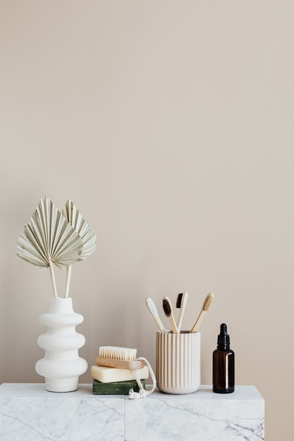

Ecología en casa
Pero...¿Reciclar no es suficiente?
La respuesta es NO. Si bien el hecho de reciclar es muy importante.
También se necesitan otras acciones y actitudes para llevar adelante una vida más "eco-sostenible".
Recorda que siempre tenemos que tener en cuenta las "3R" de la ecología:Reduci, Recicla y Reutiliza.

Productos ecologicos
- Cepillo de dientes de bambú: Esta aprovado por dentistas y contine un 97% menos de plastico.
- Shampoo y Acondicionador sólidos: Son productos amigable con el medio ambiente ya que son naturales, biodegradables. Te renden aprox.60-80 lavadas.
- Esponja de yute: Ideal para reemplazar las esponjas sintenticas. Son tejida a mano con hilo natural de yute y rellenas con luffa
- Sorbetes de bambú o metal: Reulizables y vienen de distintas formas.
- Afeitadora de metal: Cumple la misma funcion que una tradional, pero la diferencia es que dura para toda la vida. Solamente se cambian las cuchillas.
- Desodorante natural: Es mucho menos abrasivo para la piel y se puede hacer facilmete en tu hogar.
Mitos sobre la ecología
Existen muchísimos mitos y malentendidos sobre este tema. Los más habituales de escuchar son:
- "Es muy caro, solamente es para los que tienen plata". Al ser ecologista evitas el hiperconsumo, asi que se ahorra :) . En algunos casos no optamos por el producto más barato porque valoremos otros criterios: la calidad del producto, su bajo impacto ambiental, su procedencia de comercio justo.
- "Dejar las bombillas de bajo consumo encendidas consume menos que apagar y encender cada vez que se necesita". Los antiguos sistemas de encendidos de los fluorescentes tenían un consumo significativo,
pero desde hace años el encendido tiene consumos inapreciables,
por lo que merece la pena apagar cada vez que dejas de necesitar la iluminación.
- "Separar los residuos es una pérdida de tiempo, porque al final se junta todo en el camión". Sin descartar que en alguna ocasión se haya dado el caso, no es, ni mucho menos, lo habitual.
Por ejemplo, los contenedores de papel-cartón y vidrio son descargados regularmente en camiones que trasladan esas materias primas a las fábricas correspondientes,
ya que ahorran materias primas y energía en la fabricación de papel y vidrio.
- " Dejar las bombillas de bajo consumo encendidas consume menos que apagar y encender cada vez que se necesita".
Los antiguos sistemas de encendidos de los fluorescentes tenían un consumo significativo,
pero desde hace años el encendido tiene consumos inapreciables,
por lo que merece la pena apagar cada vez que dejas de necesitar la iluminación.
Arriba